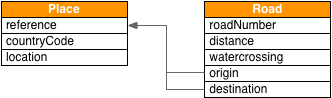
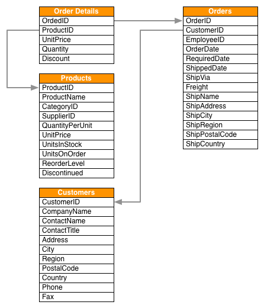
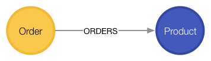

<article class="guide">
  <carousel class="deck container-fluid">
    <slide class="row-fluid">
      <div class="col-sm-3">
        <h3>E-Roads Graph</h3>
        <p class="lead">Spatial data in a graph</p>
      </div>
      <div class="col-sm-9">
        <p>The <em>E-Roads Graph</em> demonstrates how to spatial data points within Neo4j,
          using a small set of roads connecting European cities.
        </p>
        <p>This guide will show you how to:</p>
        <ol class="big">
          <li>Load: create data from external CSV files</li>
          <li>Create: spatial data using latitude & longitude</li>
          <li>Relate: connect spatial points roads that include distance</li>
        </ol>
      </div>
    </slide>
    <slide class="row-fluid">
      <div class="col-sm-3">
        <h3>Import Places & Roads</h3>
        <p>
          The E-Roads use a single csv which contains an origin place, destination place, and the road connecting them..
        </p>
        <p>The load statements to the right require public internet access.<code>LOAD CSV</code> will retrieve a CSV file from a valid URL, applying a Cypher statement to
          each row using a named map (here we're using the name `row`).
        </p>
        <p></p>
        <hr>
        <p><small>:help</small>&nbsp;<a help-topic="cypher">cypher</a>&nbsp;<a help-topic="load-csv">LOAD CSV</a></p>
      </div>
      <div class="col-sm-9">
        <h4>Load records</h4>
        <figure>
          <pre class="pre-scrollable code runnable">LOAD CSV WITH HEADERS FROM &quot;http://data.neo4j.com/spatial/eroads.csv&quot; AS row
MERGE (origin:Place {reference:row.origin_reference_place, countryCode:row.origin_country_code})
  ON CREATE
  SET origin.location = point({latitude: toFloat(row.origin_lat), longitude: toFloat(row.origin_lon)})
MERGE (destination:Place {reference:row.destination_reference_place, countryCode:row.destination_country_code})
  ON CREATE
  SET destination.location = point({latitude: toFloat(row.destination_lat), longitude: toFloat(row.destination_lon)})
CREATE (origin)-[:ROAD {roadNumber:row.road_number,
						distance: toInteger(row.distance),
                        watercrossing: (row.watercrossing = &quot;true&quot;)}
                ]->(destination)
RETURN row</pre>
        </figure>
        <h4>Create indexes</h4>
        <figure>
          <pre class="pre-scrollable code runnable">CREATE INDEX ON :Place(location)</pre>
        </figure>
        <figure>
          <pre class="pre-scrollable code runnable">CREATE INDEX ON :Place(reference)</pre>
        </figure>
      </div>
    </slide>
    <slide class="row-fluid">
      <div class="col-sm-3">
        <h3>Querying E-Roads Graph</h3>
        <p>Lets try some queries using patterns.</p>
        <p></p>
        <hr>
        <p><small>:help</small>&nbsp;<a help-topic="cypher">cypher</a>&nbsp;<a help-topic="match">MATCH</a></p>
      </div>
      <div class="col-sm-9">
        <h4>Query using patterns</h4>
        <figure>
          <pre class="pre-scrollable code runnable">MATCH (s:Supplier)--&gt;(:Product)--&gt;(c:Category)
RETURN s.companyName as Company, collect(distinct c.categoryName) as Categories</pre>
          <figcaption>List the product categories provided by each supplier.</figcaption>
        </figure>
        <figure>
          <pre class="pre-scrollable code runnable">MATCH (c:Category {categoryName:&quot;Produce&quot;})&lt;--(:Product)&lt;--(s:Supplier)
RETURN DISTINCT s.companyName as ProduceSuppliers</pre>
          <figcaption>Find the produce suppliers.</figcaption>
        </figure>
      </div>
    </slide>
    <slide class="row-fluid">
      <div class="col-sm-3">
        <h3>Customer Orders</h3>
        <p>
          Northwind customers place orders which may detail multiple
          products.
        </p>
        <hr>
        <p><small>:help</small>&nbsp;<a help-topic="cypher">cypher</a>&nbsp;<a help-topic="load-csv">LOAD CSV</a></p>
      </div>
      <div class="col-sm-9">
        <h4>Load and index records</h4>
        <figure>
          <pre class="pre-scrollable code runnable">LOAD CSV WITH HEADERS FROM &quot;http://data.neo4j.com/northwind/customers.csv&quot; AS row
CREATE (n:Customer)
SET n = row</pre>
        </figure>
        <figure>
          <pre class="pre-scrollable code runnable">LOAD CSV WITH HEADERS FROM &quot;http://data.neo4j.com/northwind/orders.csv&quot; AS row
CREATE (n:Order)
SET n = row</pre>
        </figure>
        <figure>
          <pre class="pre-scrollable code runnable">CREATE INDEX ON :Customer(customerID)</pre>
        </figure>
        <figure>
          <pre class="pre-scrollable code runnable">CREATE INDEX ON :Order(orderID)</pre>
        </figure>
        <h4>Create data relationships</h4>
        <figure>
          <pre class="pre-scrollable code runnable">MATCH (c:Customer),(o:Order)
WHERE c.customerID = o.customerID
CREATE (c)-[:PURCHASED]-&gt;(o)</pre>
          <aside class="warn">Note you only need to compare property values like this when first creating relationships</aside>
        </figure>
      </div>
    </slide>
    <slide class="row-fluid">
      <div class="col-sm-3">
        <h3>Customer Order Graph</h3>
        <p>Notice that Order Details are always part of an Order and that they<i>relate</i> the Order to a Product &mdash; they're a join table. Join tables
          are always a sign of a data relationship, indicating shared information
          between two other records.
        </p>
        <p>Here, we'll directly promote each OrderDetail record into a relationship in the graph.</p>
        <hr>
        <p><small>:help</small>&nbsp;<a help-topic="cypher">cypher</a>&nbsp;<a help-topic="load-csv">LOAD CSV</a></p>
      </div>
      <div class="col-sm-9">
        <h4>Load and index records</h4>
        <figure>
          <pre class="pre-scrollable code runnable">LOAD CSV WITH HEADERS FROM &quot;http://data.neo4j.com/northwind/order-details.csv&quot; AS row
MATCH (p:Product), (o:Order)
WHERE p.productID = row.productID AND o.orderID = row.orderID
CREATE (o)-[details:ORDERS]-&gt;(p)
SET details = row,
  details.quantity = toInteger(row.quantity)</pre>
          <aside class="warn">Note you only need to compare property values like this when first creating relationships</aside>
        </figure>
        <h4>Query using patterns</h4>
        <figure>
          <pre class="pre-scrollable code runnable">MATCH (cust:Customer)-[:PURCHASED]-&gt;(:Order)-[o:ORDERS]-&gt;(p:Product),
      (p)-[:PART_OF]-&gt;(c:Category {categoryName:&quot;Produce&quot;})
RETURN DISTINCT cust.contactName as CustomerName, SUM(o.quantity) AS TotalProductsPurchased
</pre>
        </figure>
      </div>
    </slide>
    <slide class="row-fluid header">
      <div class="col-sm-4">
        <h4>Northwind Graph</h4><br>
        <h3>Next steps</h3>
      </div>
      <div class="col-sm-4">
        <h3>More code</h3>
        <ul class="undecorated">
          <li><a play-topic="movie-graph">Movie Graph</a> - actors &amp; movies</li>
          <li><a play-topic="cypher">Cypher</a> - query language fundamentals</li>
        </ul>
      </div>
      <div class="col-sm-4">
        <h3>Reference</h3>
        <ul class="undecorated">
          <li><a target="_blank" href="https://neo4j.com/developer/guide-importing-data-and-etl/">Full Northwind import example</a></li>
          <li><a target="_blank" href="https://neo4j.com/developer/">Developer resources</a></li>
          <li><a target="_blank" href="https://neo4j.com/docs/developer-manual/3.2/">Neo4j Developer Manual</a></li>
        </ul>
      </div>
    </slide>
  </carousel>
</article>
